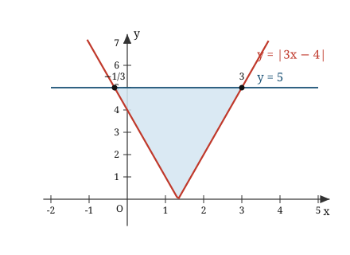
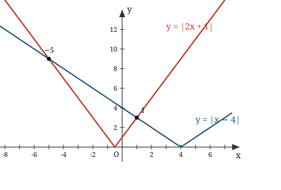

<script src="/assets/redirect.js"></script>
<section class="theory" data-section="P23-1.3">
<h2>1.3 Solving modulus inequalities</h2>
<p class="src">Based on Cambridge International AS &amp; A Level Mathematics: Pure Mathematics 2 &amp; 3 Coursebook (Hugh Neill, Douglas Quadling and Julian Gilbey), Chapter 1 Algebra, printed pp.8–10 (Worked examples 1.5–1.6, Exercise 1C). Own wording and new numbers.</p>
<p class="key-words"><strong>Key words:</strong> <em>modulus inequality</em>, <em>boundary value</em></p>
<p>Two useful properties for inequalities that involve \(|a|\) are
\[
|a|\leqslant b \iff -b\leqslant a\leqslant b
\qquad\text{and}\qquad
|a|\geqslant b \iff a\leqslant -b\text{ or }a\geqslant b,
\]
provided, in the first of these, that \(b\geqslant 0\). The same statements hold with strict inequalities \(\lt\) and \(\gt\).</p>
<p>A modulus inequality is an inequality that involves one or more moduli. An inequality such as \(|3x-4|\lt 5\) can therefore be rewritten as a pair of ordinary linear inequalities and solved algebraically. It can also be solved from a graph: the solutions are the values of \(x\) for which the graph of \(y=|3x-4|\) lies below the line \(y=5\).</p>
<p>When two moduli are compared, a further property is useful. Both sides are at least \(0\), so
\[
|a|\geqslant |b| \iff a^2\geqslant b^2.
\]
Squaring produces a quadratic inequality, which is then solved by finding the <strong>boundary values</strong> (where the two sides are equal) and testing the sign of the quadratic on each side of those values. The same boundary values can be read off as the intersections of the graphs \(y=|a|\) and \(y=|b|\).</p>
<div class="worked-example">
<h4>Worked example 1: A linear modulus inequality</h4>
<p class="src">Book: Worked example 1.5, p.9; new inequality</p>
<p>Solve the inequality \(|3x-4|\lt 5\).</p>
<ol class="steps">
<li><strong>Algebra.</strong> The inequality is equivalent to \(-5\lt 3x-4\lt 5\). Adding \(4\) throughout gives \(-1\lt 3x\lt 9\), and dividing by \(3\) gives \(-\dfrac{1}{3}\lt x\lt 3\). <span class="mark">M1 A1</span></li>
<li><strong>Graph.</strong> The graph of \(y=|3x-4|\) is a V-shape with vertex at \(\bigl(\dfrac{4}{3},0\bigr)\). It meets the line \(y=5\) where \(3x-4=5\) and where \(-(3x-4)=5\), so at \(x=3\) and at \(x=-\dfrac{1}{3}\). The V lies below \(y=5\) between these intersections, which confirms \(-\dfrac{1}{3}\lt x\lt 3\). <span class="mark">A1</span></li>
</ol>
<p></p>
<p class="final"><strong>Answer:</strong> \(-\dfrac{1}{3}\lt x\lt 3\)</p>
</div>
<div class="worked-example">
<h4>Worked example 2: Comparing two moduli</h4>
<p class="src">Book: Worked example 1.6, pp.9–10; new inequality</p>
<p>Solve the inequality \(|2x+1|\geqslant |x-4|\).</p>
<ol class="steps">
<li>Squaring both sides, which are at least \(0\), gives \((2x+1)^2\geqslant (x-4)^2\). Expanding and simplifying produces \(4x^2+4x+1\geqslant x^2-8x+16\), so \(3x^2+12x-15\geqslant 0\), or \(x^2+4x-5\geqslant 0\). <span class="mark">M1</span></li>
<li>Factorising, \((x+5)(x-1)\geqslant 0\). The boundary values are \(x=-5\) and \(x=1\). The quadratic is non-negative outside the roots, so \(x\leqslant -5\) or \(x\geqslant 1\). <span class="mark">A1</span></li>
<li>The same conclusion comes from the graphs of \(y=|2x+1|\) and \(y=|x-4|\), which meet at \(x=-5\) and at \(x=1\). The graph of \(y=|2x+1|\) lies on or above the other graph for \(x\leqslant -5\) and for \(x\geqslant 1\). <span class="mark">A1</span></li>
</ol>
<p></p>
<p class="final"><strong>Answer:</strong> \(x\leqslant -5\) or \(x\geqslant 1\)</p>
</div>
<p>A value that makes one side of a non-modular rewrite undefined, or that has been introduced by squaring, should be checked in the original inequality if there is any doubt. Here both sides were already moduli, so every real \(x\) is admissible and the boundary values themselves satisfy the non-strict inequality.</p>
<h3>Common mistakes</h3>
<ul>
<li>Writing \(|a|\lt b\) as \(a\lt b\) only, and losing the condition \(a\gt -b\).</li>
<li>Reversing the inequality when multiplying or dividing by a negative number, or forgetting that \(|a|\geqslant |b|\) is the region <em>outside</em> the boundary values when the quadratic opens upwards.</li>
<li>Reading the graph the wrong way round: for \(|f(x)|\lt k\) the V must lie <em>below</em> the line \(y=k\).</li>
</ul>
<h3>Quick checks</h3>
<div class="quick-check">
<h4>Quick check 1</h4>
<p>Solve \(|x-3|\lt 5\). What is the greater end of the solution interval?</p>
<details><summary>Worked solution</summary>
<p>\(-5\lt x-3\lt 5\), so \(-2\lt x\lt 8\). The greater end is \(8\).</p>
</details>
</div>
<div class="quick-check">
<h4>Quick check 2</h4>
<p>Solve \(|2x-1|\lt 7\). What is the greater end of the solution interval?</p>
<details><summary>Worked solution</summary>
<p>\(-7\lt 2x-1\lt 7\), so \(-6\lt 2x\lt 8\), and \(-3\lt x\lt 4\). The greater end is \(4\).</p>
</details>
</div>
<div class="quick-check">
<h4>Quick check 3</h4>
<p>Solve \(|x-6|\geqslant 2\). What is the smaller of the two boundary values of the solution?</p>
<details><summary>Worked solution</summary>
<p>\(x-6\leqslant -2\) or \(x-6\geqslant 2\), so \(x\leqslant 4\) or \(x\geqslant 8\). The smaller boundary value is \(4\).</p>
</details>
</div>
<p class="marks-key">B marks are for a correct statement; M marks are for a correct method; A marks are for an accurate result.</p>
</section>
